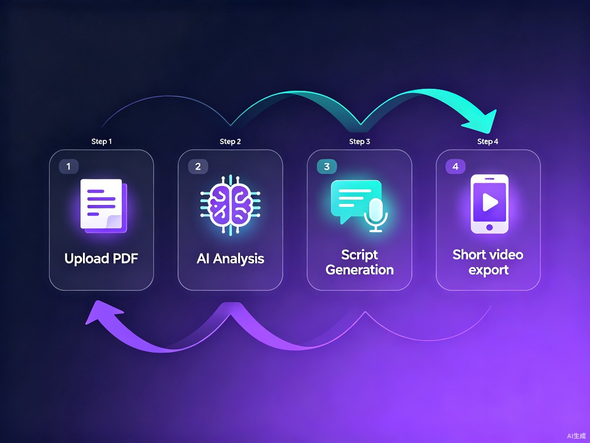

优秀的科研成果被困在论文里，短视频创作者也缺少可信的学术源头。双方都面临真实困境。
写论文驾轻就熟，但面对短视频平台无从下手。不知道怎么写口播稿，不知道怎么设计钩子，更不知道什么样的内容能火。花大量时间写出的脚本，播放量可能不到 500。
知识类博主选题越来越卷，大多数只能从科普文章二创，缺少一手学术论文的支撑。想深入但读不懂论文的术语和逻辑结构，选题容易流于表面。
一篇论文从阅读到输出脚本平均需要 6-8 小时。如果同时尝试适配多平台（抖音、小红书、B站），这个时间还要再翻倍。
覆盖从校园到职场的学术内容创作者生态。
读了大量文献想做成科普视频增加学术影响力，但写脚本耗时超过写论文本身。
想用短视频做学科科普和招生宣传，但教学科研任务重，没有时间学短视频制作。
需要持续产出有深度的知识内容，但获取一手段论文太困难，选题深度不够就容易掉粉。
通过 AI 技术与短视频思维的深度融合，重新定义学术内容的分发方式。
AI 自动解析论文结构、提取关键论点、匹配短视频叙事框架。过去撰写一篇高质量口播稿需要半天到一天，现在只需上传 PDF。
保留学术核心观点的同时，自动加入钩子设计、情绪节奏、互动引导等短视频爆款要素。既有深度，又有人看。
不必学习剪辑、拍摄、文案——你只需要会上传论文，剩下的交给 AI。让每个实验室、每个课题组都能拥有自己的知识传播频道。
四步完成论文到短视频脚本的完整转化。

支持 PDF、LaTeX 格式。拖拽式上传，自动识别中英文论文结构。
提取摘要、方法、核心发现、创新点。自动生成「论文知识图谱」。
选择平台风格（抖音/小红书/B站），AI 自动匹配口播框架和文案调性。
一键导出脚本、提词稿、分镜建议。支持直接复制到剪辑工具或发布平台。
从论文解析到爆款适配，每一环都经过精心设计。
基于大语言模型的深度论文解析，自动识别论文的创新点、方法论、实验结果和局限性。支持对比多篇论文生成「研究综述」类脚本。
内置抖音、小红书、B站三大平台的爆款脚本模板库。根据平台算法偏好自动调整文案结构：抖音用强钩子+快节奏，小红书用干货+种草感，B站用深度+趣味性。
脚本自动匹配画面建议：从关键帧构图到字幕样式，让用户拿着脚本就能直接开拍。支持自动生成「提词稿 + 分镜卡」双栏排版。
分析同类论文主题的爆款视频数据，提供选题热度评估和脚本优化建议。追踪不同平台的传播效果，持续迭代文案策略。
极简的交互体验，让学术人零学习成本上手。
论文管理与解析区：上传论文后自动高亮显示关键段落，支持批注和知识点标注。
脚本编辑与预览区：实时显示生成的口播稿，支持手动微调、平台切换和风格调整。
一键导出多格式脚本、分镜卡、提词稿，支持直接分享到剪辑工具或社交平台。
| 设计维度 | 设计理念 | 实现方式 |
|---|---|---|
| 色彩体系 | 深色科技风 + 紫青渐变，突出学术信任感与短视频活力 | CSS 变量 + 渐变背景 |
| 排版布局 | 双栏对照，左侧论文原文，右侧脚本输出 | Flexbox + Grid 自适应 |
| 交互反馈 | 实时解析进度 + 逐段预览，消除等待焦虑 | 流式响应 + 骨架屏 |
| 响应式设计 | 桌面端双栏，移动端上下叠放 | Media Query 断点适配 |
| 无障碍 | 高对比度文字、键盘导航、屏幕阅读器支持 | WCAG AA 标准 |
| 动效设计 | 微交互动画增强体验，不干扰操作 | CSS transitions + 有限 JS 动画 |